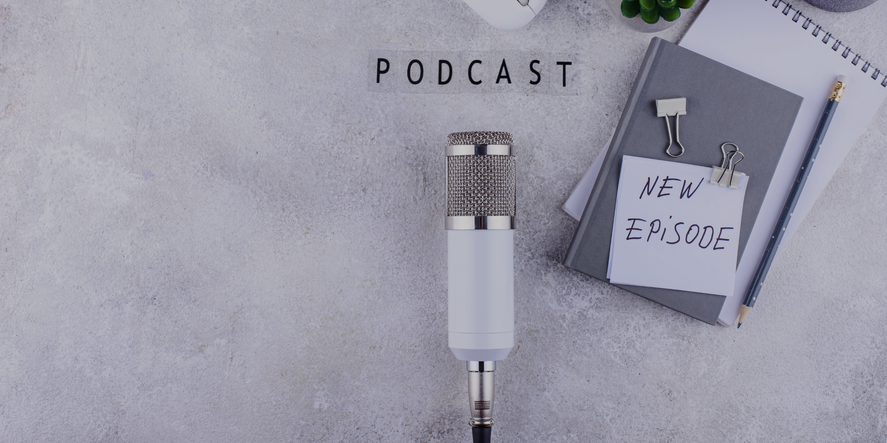

#01
人情係心意，定係幫新人埋單？
同事揀咗一場豪華婚宴，做人情係應該睇關係，定要跟住場地同酒席價錢？當「祝福」開始似婚宴入場費，去唔去、畀幾多，都變成一個難題。
睇情景 + 收聽
Spotify · Apple Podcasts · YouTube
“
「新人揀得愈貴，賓客係咪就自然有責任做人情做得愈多？」
WedHQ 由一個個真實或匿名婚禮 Scenario出發。唔係教你「應該點做」，而係將新人、家人同婚禮人真正會遇到嘅選擇攤開嚟傾。
同事揀咗一場豪華婚宴，做人情係應該睇關係，定要跟住場地同酒席價錢？當「祝福」開始似婚宴入場費，去唔去、畀幾多，都變成一個難題。
「新人揀得愈貴，賓客係咪就自然有責任做人情做得愈多？」
圍爐係一個開住門嘅 online room。冇固定題目、唔需要由頭坐到尾；想講就講，想聽就聽，喺開門時段內幾時加入、幾時離開都得。
匿名上線，一班人圍埋傾婚禮。兩個鐘係開門時間，唔係兩個鐘 commitment。你可以隨時加入、隨時離開，想講就講，想聽就聽。今次係 Trial Run，我哋都唔知最後會傾成點。
了解圍爐 →可以匿名。可以係新人、婚禮人、家人，甚至係一件你到而家都仲諗唔明嘅婚禮小事。
WedHQ 由 Kit Chan 同 Kevin Leung 共同創辦及主持。兩位均為加拿大卑詩省執業嘅 Marriage Officiants（證婚主持人），透過真實或匿名婚禮 Scenario，討論新人、家庭同婚禮人真正會遇到嘅選擇、界線同關係。
由婚禮現場、人與人之間嘅溝通，同一個個「其實應該點算？」嘅情景出發。
由儀式、家庭關係同實際婚禮經驗出發，將冇標準答案嘅題目一齊拆開嚟傾。
